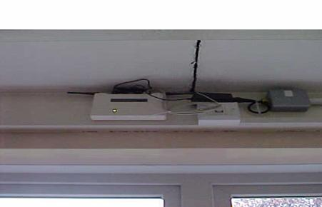
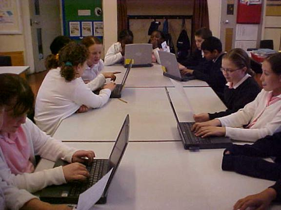
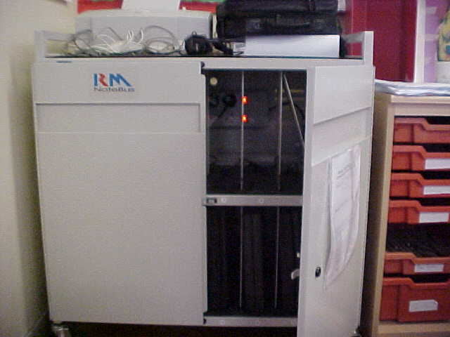

Search the Case Studies
Search the Articles
Search the Membership
Search MirandaNet
MirandaNet Fellowship Casestudy
Membership List | Publications | Research | Specialist Area List | Braided Learning Ejournal
Wireless Connectivity
Connecting Notebooks and Laptops without the need for cables
Bernard Stitt
Year of posting: 2002
Abstract:
Introduction
It all began when a strange looking object arrived in the post. It was a mini-disk but it had been cut into the shape of a rectangle, and was roughly two thirds the size of a normal CD. I tentatively popped it in the CD ROM drive and for the following 20 minutes I’d entered the world of wireless connectivity. The disk was supplied by intel explaining the new way to connect laptops or notebooks without cables making it possible to have access to substantial numbers of computers in class without the need for an ICT suite.http://www.intel.co.uk/english/network/connectivity/products/wlan_family.htm
Study
English Martyrs R.C. Primary School
A Case Study
Target Audience: The Web-Wise Wapping Community and Beyond
By Bernard Stitt
Connecting Notebooks and Laptops without the need for Cables
May 2002
Introduction
It all began when a strange looking object arrived in the post. It was a mini-disk but it had been cut into the shape of a rectangle, and was roughly two thirds the size of a normal CD. I tentatively popped it in the CD ROM drive and for the following 20 minutes I’d entered the world of wireless connectivity. The disk was supplied by intel explaining the new way to connect laptops or notebooks without cables making it possible to have access to substantial numbers of computers in class without the need for an ICT suite.
http://www.intel.co.uk/english/network/connectivity/products/wlan_family.htm
Summary
English Martyrs is a Junior, Infant and Nursery school with almost 240 pupils, boys and girls, on roll. We are situated near Tower Bridge on the borders of the City of London. Aldgate East is our nearest Tube Station.With very limited space and no ICT Suite as yet, we had a problem: how to provide an up-to-date ICT solution with space at a premium.
Our Situation
“We’re extremely pushed for space.” admits Sr. Clare Halpin head teacher. “We’ve had to work extremely hard to get plans for an ICT suite, but it won’t be built for some time. We need something now to deliver the ICT curriculum and give equal opportunities to the pupils. That’s where Bernard’s idea for wireless connectivity comes in. He asked for a meeting with the governors of the school to seek their approval and involve them with the project. They agreed and he took it from there.”Historical
Our school was built in the sixties and wasn’t designed for computers. With two RM Window Box PCs in every classroom one in each room connected by cable to the Internet, it didn’t seem feasible to start installing more cables with all the disruption that would cause. And there just wasn’t the room for any more PCs in teachers’ rooms. Bernard contacted the RM sales desk and asked to speak to someone about wireless connection and RM Notebook computers. There were several other companies the school could have chosen but we knew RM were dependable and experienced in the field.Solution
With no space for a conventional ICT room, the wireless system seemed to offer the idea of taking the computers to the pupils instead. RM furnished us with the telephone number of one of their contracted company CONNECTIX. They promptly agreed to provide us with a site survey to see if there would be any problems with obstructions to the radio signal.

An appointment was made and their engineers arrived and demonstrated to us that the technology would work.. I confirmed the order with RM and CONNECTIX arrived to do the job. The transceiver, a little box with two antennae was sited at a high point above and between junior classes Year5 and Year6.
A single cable led from the transceiver to our existing hub, connecting it to the ISDN line and the telephone system. The radio signal was found to cover a good range, all of the junior classrooms as far as the library some 30 metres away and it even extended out into the playground. The next step was to call in the borough technician, Khaled, who connected the PCMCIA card to 6 laptops and installed the software. Soon we were logging on to the internet from our wireless notebooks. It was a thrill to click on RM easymail and print a document from any of the 6 notebooks to the class printer.
Now all we had to do was order an RM Notebus from Research Machines to securely store our notebooks and charge them up overnight for use the next day. Soon the notebooks were in daily use first in year 5, then year 6 and now the notebooks are shared on a weekly basis with the 4 junior classes.
We have an ICT club on Tuesday after school and the wireless notebooks really are an asset here.

Pupils busy using the Internet using the wireless technology. You may just glimpse the intel card protruding from the notebook on the right. This receives and transmits the radio signal from the laptop. It can be removed easily when internet access is not necessary.
Benefits
With many notebooks to go around, greater access to computers and the internet has been achieved without an ICT suite.
Notebooks are charged and ready for use each teaching session by storing them in a secure cabinet: The RM Notebus.

Pupils have become expert at collecting storing and using the notebooks. Access to the internet, email etc has been greatly increased for each class. Pupils can log-on to the Window-Box software and access Think.com from their tables. The system is fully expandable. By adding another transceiver a bridge is created from one to another, effectively extending the system to the whole school. The system can also be connected to the school network i.e. an ICT suite. Standalone computers, which are not cabled in your school, can be fitted with a card to enable them too to receive the radio signal. The system works well and improvements to radio technology will mean it will be even more reliable in future.
Bernard Stitt (former) ICT Co-ordinator for English Martyrs
bernard@englishmartyrs.towerhamlets.sch.uk
Some useful web addresses:http://www.becta.org.uk/news/wireless_networks/
http://www.rm.com/Primary/Products/Story.asp?cref=PS6547
MirandaNet Members can go to the Log on/off area to edit their own casestudies.
[Back]